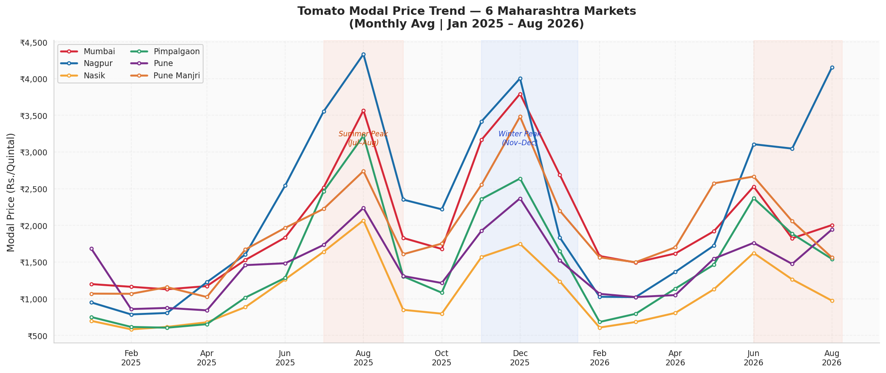
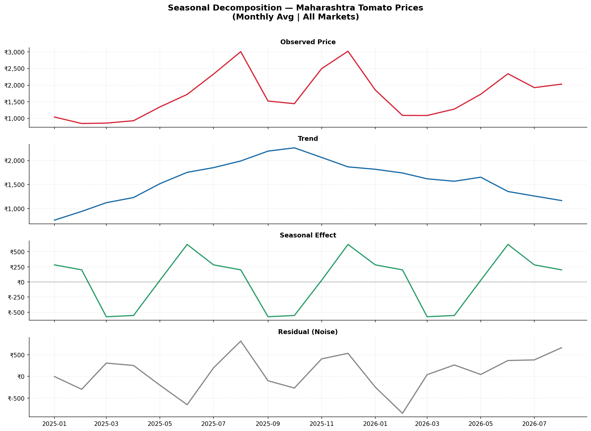
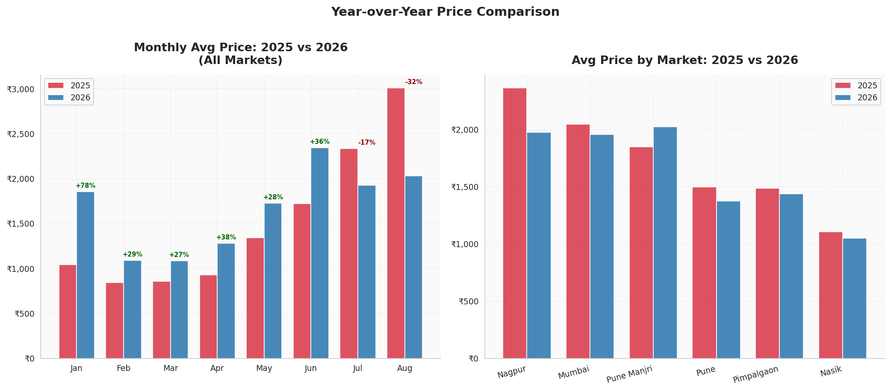
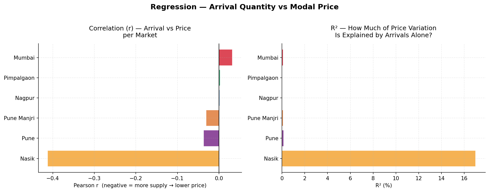
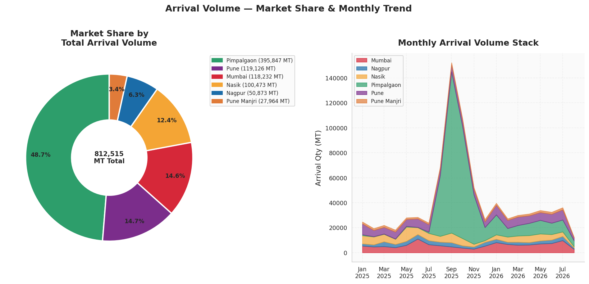
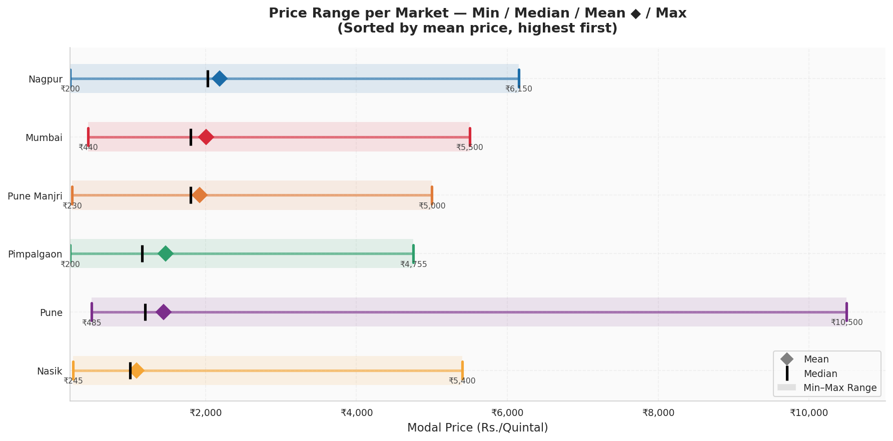
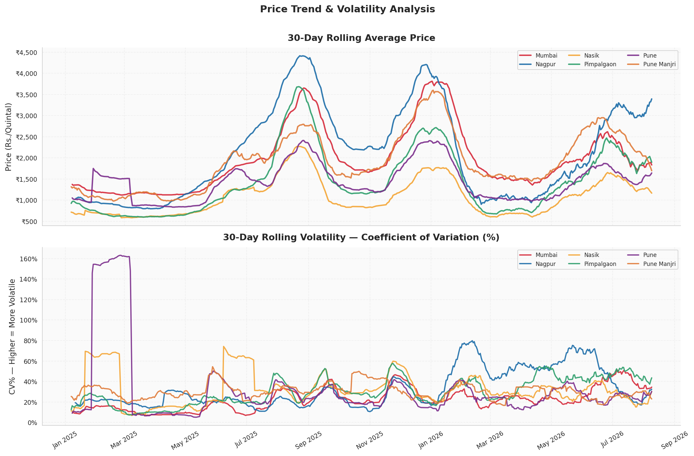

India's government has four systems to prevent it.
All of them activate after the crash has already happened.
This study shows where to look — 60 days earlier.
Tomato modal prices in Maharashtra ranged from ₹200 to ₹10,500 per quintal between January 2025 and August 2026. This is not random volatility — it is a predictable cycle that repeats every year, in the same months, at the same markets. Farmers cannot plan. Traders cannot hedge. Consumers cannot budget.

Daily modal prices — all 6 markets — annotated price events and ±2σ volatility band
→ Activates after retail prices already spiked
→ Farmers have already harvested and sent trucks before MIS triggers
→ Slow to deploy, does not prevent seasonal price swings
→ No live monitoring trigger yet connected to existing intervention systems
20 months of daily APMC market data — Maharashtra's tomato supply chain, end to end
| Records | 3,093 daily observations |
| Markets | 6 APMC markets across 4 districts |
| Period | January 2025 — August 2026 |
| Missing values | Zero |
| Source | Agmarknet (data.gov.in) |
Six findings. Each one backed by a chart.

Seasonal decomposition — trend, seasonal component, residual noise
Seasonal decomposition of 20 months of price data reveals a recurring semi-annual pattern with an amplitude of ₹600–900 per quintal. The price swing is not random volatility — it is a mathematical cycle tied to the Rabi and Kharif harvest calendars. The crisis looks like chaos. The data says otherwise.

Year-over-year price comparison — 2025 vs 2026, monthly average
Jan–Apr 2026 prices crashed 30–50% compared to the same months in 2025. High 2025 prices motivated excess planting across Maharashtra and Karnataka. The bumper 2026 Rabi crop flooded markets and collapsed prices. The farmers who planted because prices were high got hurt because they planted. MIS triggered after the damage was done.

Linear regression — arrival quantity vs modal price, per market (R² shown)
Regression across all 6 markets confirms that higher arrivals push prices down — the direction is correct. But R² is below 15% across every market. Arrival quantity alone explains less than 15% of daily price movement. The remaining 85%+ is weather, transport, inter-state demand, and trader behaviour. A single upstream leading indicator outperforms a complex model on this data.

Market share by total arrival volume — Pimpalgaon + Nasik ≈ 70% of state supply
Pimpalgaon Baswant APMC handles 49% of all Maharashtra tomato arrivals. Add Nasik APMC and Nashik district accounts for ~70% of total state supply. Every market in Maharashtra — Mumbai, Pune, Nagpur — is fully dependent on trucks leaving this one district. One crop disease, one highway closure, one bad monsoon in Nashik, and every retail price in the state moves within 48 hours. This is a systemic single-point-of-failure with no early monitoring.

Price range per market — min, median, mean, and max sorted by average price
The average price difference between Nasik (₹1,084/qtl) and Nagpur (₹2,188/qtl) is ₹1,104 per quintal. The tomato does not change. Only the distance does. This gap — transport cost, cold chain absence, middlemen margins, and market fees — is what Operation Greens' 50% transport subsidy is designed to reduce. The subsidy exists. The market awareness and real-time timing to use it do not.

30-day rolling price volatility (CV%) — higher means more unpredictable prices
Nagpur is simultaneously the most expensive (₹2,188 avg) and the most volatile market (CV 62%) in our dataset — despite having zero local tomato production. It absorbs every supply shock from Nashik with no local buffer. A cold wave in Nashik or a truck strike hits Nagpur before any intervention can reach it. It is the most exposed market in Maharashtra's tomato network.
India does not need a new scheme, a new agency, or a new budget to prevent tomato price crashes. It needs a data-driven signal that fires PSF and MIS before the crisis lands in retail prices. Our analysis identifies that signal.
When Pimpalgaon Baswant APMC monthly arrival volumes exceed 150% of their 20-month rolling average for two or more consecutive months — a state-wide price crash will follow within 60 to 90 days.
What existing agencies should do when the signal fires
| Action | Agency | Existing Tool |
|---|---|---|
| Pre-position NCCF trucks for inter-state redistribution | NCCF / NAFED | MIS Infrastructure |
| SMS alert to Nashik farmers via PM-KISAN — reduce new planting | Ministry of Agriculture | PM-KISAN Database |
| Begin PSF procurement from Pimpalgaon before crash lands | Department of Consumer Affairs | Price Stabilisation Fund |
| Proactively trigger Operation Greens transport subsidy | MoFPI | Operation Greens Fund |
The data to run this signal is already public on Agmarknet, updated daily, free to access.
Reproducible. Open source. Fully documented.
Data sourced from Agmarknet (Government of India) — daily modal price and arrival quantity for 6 Maharashtra APMC markets, Jan 2025 – Aug 2026
Data profiling — shape, types, nulls, duplicates, date coverage per market (all clean, zero missing values)
Seasonal decomposition using statsmodels (additive model, period=6)
Linear regression using scipy.stats.linregress — arrival quantity vs modal price per market
Rolling volatility using 30-day coefficient of variation
14 visualisations generated programmatically in matplotlib and seaborn — fully reproducible